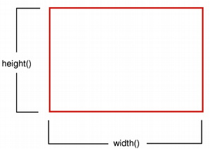
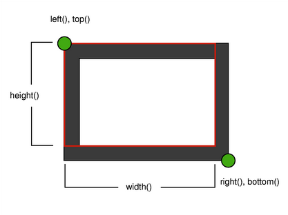
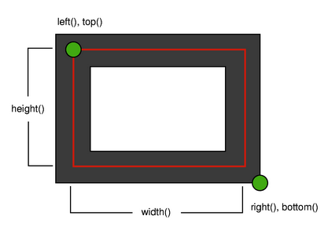
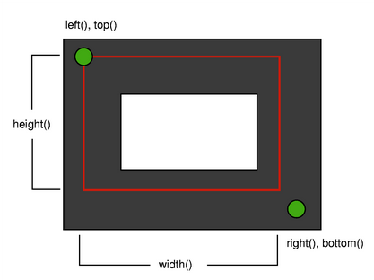
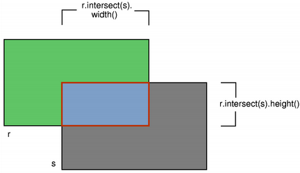
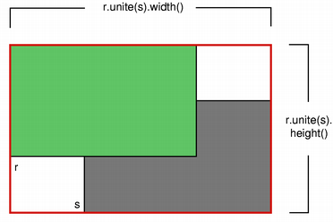

| Home · All Classes · Main Classes · Grouped Classes · Modules · Functions |
The QRectF class defines a rectangle in the plane using floating point coordinates for accuracy. More...
#include <QRectF>
The QRectF class defines a rectangle in the plane using floating point coordinates for accuracy.
A rectangle is normally expressed as an upper-left corner and a size. QRectF provides a variant of the QRect class that defines the position and dimension of the rectangle using qreal values for accuracy.
The default coordinate system has origin (0, 0) in the top-left corner. The positive direction of the y axis is down, and the positive x axis is from left to right.
The size (width and height) of a QRectF is always equivalent to the mathematical rectangle that form the basis for its rendering:

If you use an anti-aliased painter the boundary line of a QRectF will be rendered symetrically on both sides of the mathematical rectangle's boundary line. But when using an aliased painter (the default) other rules apply.
Then, when rendering with a one pixel wide pen the QRectF's boundary line will be rendered to the right and below the mathematical rectangle's boundary line.
When rendering with a two pixel wide pen the boundary line will be split in the middle by the mathematical rectangle. This will be the case whenever the pen has an even number of pixels, while rendering with a pen with an odd number of pixels, the spare pixel will be rendered to the right and below the mathematical rectangle as in the one pixel case.
| One pixel wide pen | Two pixel wide pen | Three pixel wide pen |
 |  |  |
A QRectF can be constructed with a set of qreals specifying the coordinates of the top-left corner of the rectangle and its dimensions or from a QPointF and a QSizeF. The following code creates two identical rectangles.
QRectF r1(100, 200, 11, 16);
QRectF r2(QPoint(100,200), QSize(11,16));
There is also a third constructor creating a QRectF from a QRect.
After creation, the dimensions can be changed with setLeft(), setRight(), setTop(), and setBottom(), or by setting sizes with setWidth(), setHeight(), and setSize(). The dimensions can also be changed with the move functions, such as moveBy(), moveCenter(), and moveBottomRight(). You can also add coordinates to a rectangle with adjust(). You can test to see if a rectangle contains a specific point with the contains() function, and you can test to see if two rectangles intersect with the intersects() function.
You can also retrieve the intersection as a QRect using intersect():

And finally you can retrieve the bounding rectangle of two QRects using unite():

See also QPointF, QSizeF, QPolygonF, and QRect.
Constructs a null rectangle.
See also isNull().
Constructs a rectangle with topLeft as the top-left corner and size as the rectangle size.
Constructs a rectangle with the top-left corner at (x, y) and dimensions specified by the width and height.
Constructs a QRectF with from the given rect.
Adds xp1, yp1, xp2 and yp2 respectively to the existing coordinates of the rectangle.
See also adjusted().
Returns a new rectangle with (xp1, yp1) added to the existing position of the rectangle's top-left corner, and (xp2, yp2) added to the position of its bottom-right corner.
See also adjust().
Returns the bottom coordinate of the rectangle.
See also setBottom(), top(), bottomLeft(), and bottomRight().
Returns the bottom-left position of the rectangle.
See also setBottomLeft(), moveBottomLeft(), topRight(), bottom(), and left().
Returns the bottom-right position of the rectangle.
See also setBottomRight(), moveBottomRight(), topLeft(), right(), and bottom().
Returns the center point of the rectangle.
See also moveCenter(), topLeft(), bottomRight(), topRight(), and bottomLeft().
Returns true if the given point is inside or on the edge of the rectangle; otherwise returns false.
See also unite(), intersect(), and intersects().
This is an overloaded member function, provided for convenience. It behaves essentially like the above function.
Returns true if the point (x, y) is inside this rectangle; otherwise returns false.
See also unite(), intersect(), and intersects().
This is an overloaded member function, provided for convenience. It behaves essentially like the above function.
Returns true if the given rectangle is inside this rectangle; otherwise returns false.
See also unite(), intersect(), and intersects().
Extracts the rectangle parameters as the top-left point *xp1, *yp1 and the bottom-right point *xp2, *yp2.
See also setCoords() and getRect().
Extracts the position of the rectangle's top-left corner to *x, *y, its width to *w, and its height to *h.
See also setRect() and getCoords().
Returns the height of the rectangle.
See also width(), size(), and setHeight().
Returns the intersection of this rectangle and the other rectangle. r.intersect(s) is equivalent to r&s.
See also unite().
Returns true if this rectangle intersects with the given rectangle (there is at least one pixel that is within both rectangles); otherwise returns false.
See also intersect() and contains().
Returns true if the rectangle is empty; otherwise returns false.
An empty rectangle has a width() <= 0 or height() <= 0.
An empty rectangle is not valid. isEmpty() == !isValid()
See also isNull(), isValid(), and normalized().
Returns true if the rectangle is a null rectangle; otherwise returns false.
A null rectangle has both the width and the height set to 0.
A null rectangle is also empty and invalid.
See also isEmpty() and isValid().
Returns true if the rectangle is valid; otherwise returns false.
A valid rectangle has a width() > 0 and height() > 0.
Note that non-trivial operations like intersections are not defined for invalid rectangles.
isValid() == !isEmpty()
See also isNull(), isEmpty(), and normalized().
Returns the left coordinate of the rectangle. Identical to x().
See also setLeft(), right(), topLeft(), and bottomLeft().
Sets the bottom position of the rectangle to pos, leaving the size unchanged.
See also bottom(), setBottom(), moveLeft(), moveTop(), and moveRight().
Sets the bottom-left position of the rectangle to p, leaving the size unchanged.
See also bottomLeft(), setBottomLeft(), moveTopLeft(), moveBottomRight(), and moveTopRight().
Sets the bottom-right position of the rectangle to p, leaving the size unchanged.
See also bottomRight(), setBottomRight(), moveTopLeft(), moveTopRight(), and moveBottomLeft().
Set the center position of the rectangle to pos, leaving the size unchanged.
Sets the left position of the rectangle to pos, leaving the size unchanged.
See also left(), setLeft(), moveTop(), moveRight(), and moveBottom().
Sets the right position of the rectangle to pos, leaving the size unchanged.
See also right(), setRight(), moveLeft(), moveTop(), and moveBottom().
Moves the top left corner of the rectangle to x and y, without changing the rectangles size.
See also translate() and moveTopLeft().
This is an overloaded member function, provided for convenience. It behaves essentially like the above function.
Moves the top left corner of the rectangle to pt, without changing the rectangles size.
See also translate() and moveTopLeft().
Sets the top position of the rectangle to pos, leaving the size unchanged.
See also top(), setTop(), moveLeft(), moveRight(), and moveBottom().
Sets the top-left position of the rectangle to p, leaving the size unchanged.
See also topLeft(), setTopLeft(), moveBottomRight(), moveTopRight(), and moveBottomLeft().
Sets the top-right position of the rectangle to p, leaving the size unchanged.
See also topRight(), setTopRight(), moveTopLeft(), moveBottomRight(), and moveBottomLeft().
Returns a normalized rectangle; i.e. a rectangle that has a non-negative width and height.
It swaps left and right if width() < 0, and swaps top and bottom if height() < 0.
See also isValid().
Returns the right coordinate of the rectangle.
See also setRight(), left(), topRight(), and bottomRight().
Sets the bottom edge of the rectangle to pos. May change the height, but will never change the top edge of the rectangle.
See also bottom(), setTop(), and setHeight().
Set the bottom-left corner of the rectangle to p. May change the size, but will the never change the top-right corner of the rectangle.
See also bottomLeft(), moveBottomLeft(), setTopLeft(), setBottomRight(), and setTopRight().
Set the bottom-right corner of the rectangle to p. May change the size, but will the never change the top-left corner of the rectangle.
See also bottomRight(), moveBottomRight(), setTopLeft(), setTopRight(), and setBottomLeft().
Sets the position of the rectangle's top-left corner to (xp1, yp1), and the position of its bottom-right corner to (xp2, yp2).
See also getCoords() and setRect().
Sets the height of the rectangle. The top edge is not moved, but the bottom edge may be moved.
See also height(), setTop(), setBottom(), and setSize().
Sets the left edge of the rectangle to pos. May change the width, but will never change the right edge of the rectangle.
Identical to setX().
See also left(), setTop(), and setWidth().
Sets the position of the rectangle's top-left corner to (x, y), and resizes it to the specified width and height.
See also getRect() and setCoords().
Sets the right edge of the rectangle to pos. May change the width, but will never change the left edge of the rectangle.
See also right(), setLeft(), and setWidth().
Sets the size of the rectangle to size. The top-left corner is not moved.
See also size(), setWidth(), and setHeight().
Sets the top edge of the rectangle to pos. May change the height, but will never change the bottom edge of the rectangle.
Identical to setY().
See also top(), setBottom(), and setHeight().
Set the top-left corner of the rectangle to p. May change the size, but will the never change the bottom-right corner of the rectangle.
See also topLeft(), moveTopLeft(), setBottomRight(), setTopRight(), and setBottomLeft().
Set the top-right corner of the rectangle to p. May change the size, but will the never change the bottom-left corner of the rectangle.
See also topRight(), moveTopRight(), setTopLeft(), setBottomRight(), and setBottomLeft().
Sets the width of the rectangle. If the width is different to the old width, only the rectangle's right edge is moved. The left edge is not moved.
See also width(), setLeft(), setRight(), and setSize().
Sets the x position of the rectangle (its left end) to x. May change the width, but will never change the right edge of the rectangle.
Identical to setLeft().
Sets the y position of the rectangle (its top) to y. May change the height, but will never change the bottom edge of the rectangle.
Identical to setTop().
Returns the size of the rectangle to floating point accuracy.
See also setSize(), width(), and height().
Returns a QRect based on the values of this rectangle. Note that the coordinates in the returned rectangle are rounded to the nearest integer.
Returns the top coordinate of the rectangle. Identical to y().
See also setTop(), bottom(), topLeft(), and topRight().
Returns the top-left position of the rectangle.
See also setTopLeft(), moveTopLeft(), bottomRight(), left(), and top().
Returns the top-right position of the rectangle.
See also setTopRight(), moveTopRight(), bottomLeft(), top(), and right().
Moves the rectangle dx along the x-axis and dy along the y-axis, relative to the current position. Positive values move the rectangle to the right and downwards.
See also moveTo(), moveTopLeft(), and translated().
This is an overloaded member function, provided for convenience. It behaves essentially like the above function.
Moves the rectangle p.x() along the x-axis and p.y() along the y-axis, relative to the current position. Positive values move the rectangle to the right and downwards.
See also moveTo(), moveTopLeft(), and translated().
Returns a copy of the rectangle that is translated dx along the x axis and dy along the y axis, relative to the current position. Positive values move the rectangle to the right and down.
See also moveTo(), moveTopLeft(), and translate().
This is an overloaded member function, provided for convenience. It behaves essentially like the above function.
Returns a copy of the rectangle that is translated p.x() along the x axis and p.y() along the y axis, relative to the current position. Positive values move the rectangle to the right and down.
See also moveTo(), moveTopLeft(), and translate().
Returns the bounding rectangle of this rectangle and the other rectangle. r.unite(s) is equivalent to r|s.
See also intersect().
Returns the width of the rectangle. The width includes both the left and right edges.
See also setWidth(), height(), size(), and setHeight().
Returns the x-coordinate at the left edge of the rectangle. Identical to left().
See also left(), y(), and setX().
Returns the y-coordinate at the top edge of the rectangle. Identical to top().
See also top(), x(), and setY().
Returns the intersection of this rectangle and the other rectangle.
Returns an empty rectangle if there is no intersection.
See also operator&=(), operator|(), isEmpty(), intersects(), and contains().
Intersects this rectangle with the other rectangle, and returns the result.
See also operator|=().
Returns the bounding rectangle of this rectangle and the other rectangle.
See also operator|=(), operator&(), intersects(), and contains().
Unites this rectangle with the other rectangle, and returns the result.
See also operator&=().
This is an overloaded member function, provided for convenience. It behaves essentially like the above function.
Returns true if the rectangles r1 and r2 are different; otherwise returns false.
This is an overloaded member function, provided for convenience. It behaves essentially like the above function.
Writes the rectangle to the stream, and returns a reference to the stream.
See also Format of the QDataStream operators.
This is an overloaded member function, provided for convenience. It behaves essentially like the above function.
Returns true if the rectangles r1 and r2 are equal; otherwise returns false.
This is an overloaded member function, provided for convenience. It behaves essentially like the above function.
Reads a rectangle from the stream, and returns a reference to the stream.
See also Format of the QDataStream operators.
| Copyright © 2005 Trolltech | Trademarks | Qt 4.0.1 |